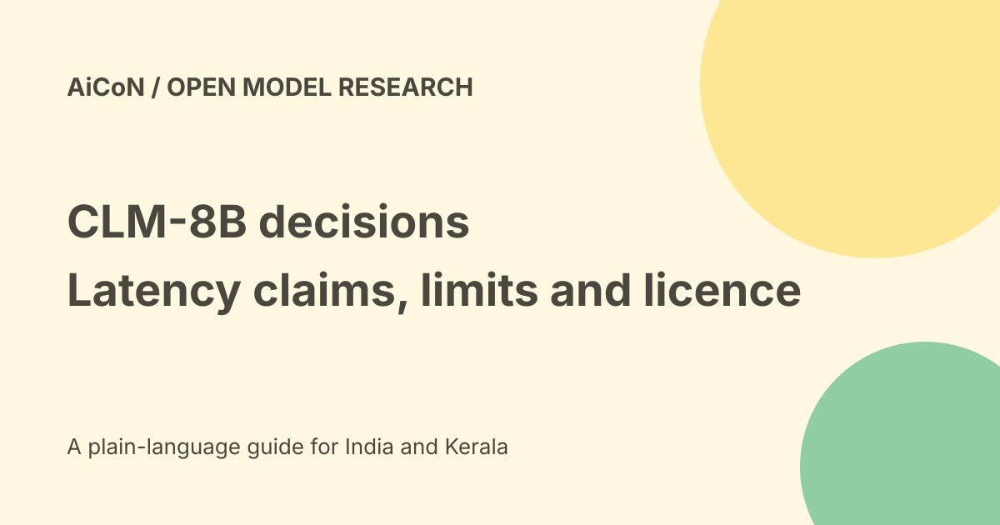

CLM-8B: contrastive decisions, latency claims and licence
The Contrastive-LM project describes CLM-8B as a System One model for fast decision-making. It links states and candidate actions through contrastive learning. The repository reports up to nine times lower latency on evaluated tasks, not a guarantee that every agent becomes nine times faster.

What contrastive decisions mean
A state describes the situation. Candidate actions describe choices. The model helps choose, rank or score them instead of always generating a long free-form answer.
The repository exposes typed questions such as choices, scores and boolean-like results. This can fit routing, verification and action selection. It is not evidence that the model can complete an entire workflow without other tools.
System One is the project label
The authors use System One to describe quick decisions. That label is not proof of human reasoning, autonomy or safety.
Choosing from an incomplete or badly framed action list can still produce the wrong decision. The candidate set and input quality are part of the system.
Training and benchmark claims
The README describes 60 million Nemotron question-answer pairs, 30 million synthetic hard negatives and one million agentic trajectories.
It reports performance on par with Jev across computer use, gaming and tool calling with up to nine times lower latency, plus fine-tuned verifier results of 87.6% on Terminal-Bench 2.1 and 81.6% on DeepSWE.
Those are author-reported results. We did not reproduce them. Fine-tuning, hardware, caching and the task setup can change results substantially.
Cached states and actions
The repository says state and action embeddings are separated and can be cached independently. Reusing an embedding can save repeated encoding work.
A cache benefit is not universal. New or changed context can still require encoding. Check cache correctness and avoid reusing a decision after permissions or source facts change.
Serving has dependencies
The documented example serves Qwen3-8B embeddings and a separate CLM API. It says the small reference head downloads on first run.
The example has a 2,048-token state limit and warns that longer states are truncated. The README describes raising both serving limits together for longer input, with additional GPU memory needs.
Truncation can remove a critical restriction or fact. Validate the actual input length and what reaches the model before using it to route sensitive work.
Licence and weights
The current repository README says its code is Apache 2.0 and CLM-8B weights are Apache 2.0 on Hugging Face. The repository licence file contains Apache 2.0 terms.
The fetched Hugging Face model card had no substantive description. Check the exact downloaded artefact and dependency licences. A repository licence does not automatically cover every dataset, base model or integrated application.
Free weights are not free operation
An open artefact can still need GPU memory, compute, storage and engineering. No public hosted API price, INR deployment quote or exact machine requirement was established here.
No packages were installed, model weights downloaded, local server started or billable GPU provisioned. Do not assume an ordinary phone can run the documented stack.
A developer evaluation plan
- Choose a narrow decision with known correct outcomes.
- Include a no-action or human-review choice.
- Use public or approved examples.
- Check input truncation and candidate coverage.
- Measure quality, latency and memory on the same hardware.
- Separate cold and cached requests.
- Review errors, not only average speed.
- Keep irreversible actions behind approval.
India and Malayalam
No regional service entitlement or Malayalam accuracy was verified. An open code repository can be read from India, but that does not establish a hosted service, support contract or local-data processing.
Use a representative test set before assigning local-language or regulated decisions to the model.
What changed since the original post?
We separate a candidate-action decision model from a general chat assistant, attribute the latency claims, include the truncation limit and distinguish open licensing from free hosted compute.
Frequently asked questions
Is every agent nine times faster?
No. The README says up to nine times on its evaluated tasks.
Is hosting free?
No free compute or hosted allowance was established.
Was the model tested here?
No.
Sources: Official repository and serving notes · Repository licence · Model artefact page. Checked 7 October 2026.